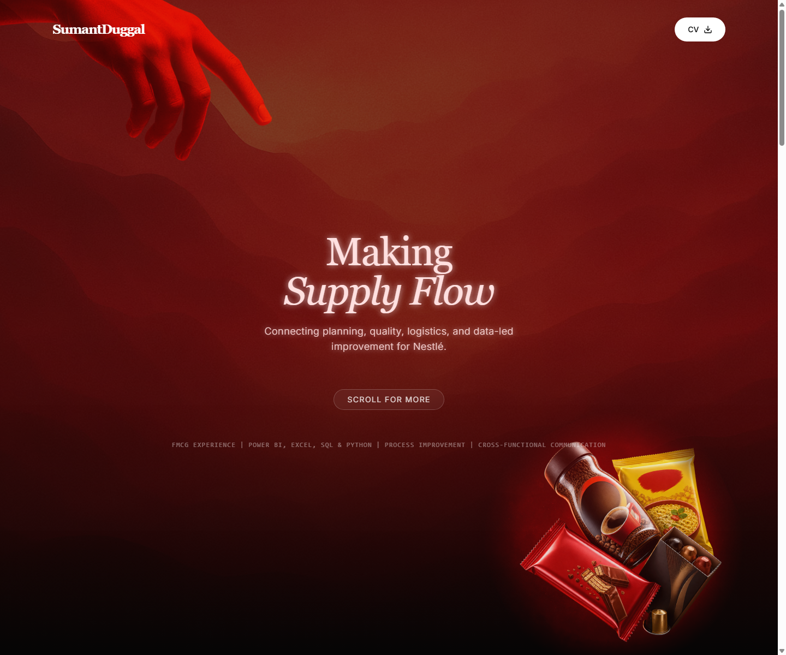

Interactive Application
In place of a traditional cover letter, I created a short interactive application that shows how I would contribute to the operations brief: connecting planning, packaging, quality, logistics, and data-led improvement while bringing five-plus years of FMCG experience, an IESE MBA in progress, and a bias for turning operational data into practical action.
View Interactive ApplicationDirect link: nestle-operations-application.vercel.app/
